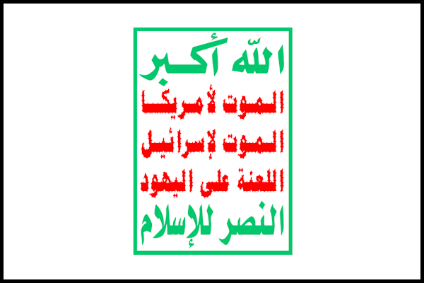

The Houthi Movement, officially known as Ansarallah is a Yemeni shi'ite islamist political group and militant organization. The Houthis arose during the 90s and 00s as a Zayadi shi'ite extremist group in Northern Yemen fighting against the Saleh regime. They grew in power and strength during the fall of said regime in 2011, coming to control large swathes of Northern Yemen thus angering the new Hadi government. Capitalizing on the moment, the Houthis in 2014 seized Sanaa, the capital of Yemen. Houthi forces would move across Yemen, until Saudi Arabia launched a large military offensive against them and for the rival government. Establishing their presence in Yemen, Ansarallah established the Supreme Political Council, a rival government. Despite a large Arab coalition organized against them, the Houthis managed to hold on and fight back, launching drone and missile attacks against the Saudis and the UAE. The Houthis have also been accused of human rights abuses, including the use of child soldiers and human shields. In 2023, the Iranian-backed Houthis simultaneously advanced the Yemeni peace process while using international shipping across the Bab al-Mandeb strait after October 7th. Ansarallah is listed as a terrorist group by Saudi Arabia, the UAE, the US, and Australia among others.
• e:
• e: